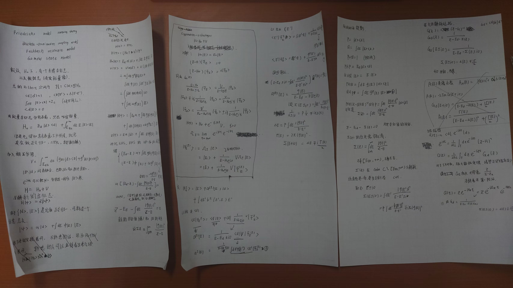

Friedrichs 模型
关键词：friedrichs model, discrete-continuum coupling, scattering state, resonance pole, gamow state

注意笔记里最后只写\(u_{pol}\), 还有\(u_{cut}\)的影响，因为算生存振幅只能在 x 轴上方积分。
原始路径只能在 x 轴上方积分，这是物理因果性决定的（薛定谔方程规定了时间的流向，导致 i 与 -i 的含义不一致）。
下压到第二张面后，只是为了便于计算，因为可以使用 Jordan 引理把路径闭合到下半平面，从而得到极点贡献。但这并不意味着物理上真的存在第二张面，因为我们只能在 x 轴上方积分。
所以
\[
u_{\rm up} = u_{\rm down} + \text{discrete}(\pm i),
\]
\(u_{\rm down}\) 等于下半面的极点贡献。
- 有效哈密顿量 / 自能 \(\Sigma(z)\)
- 散射态 \(|\Psi_E^{(\pm)}\rangle\)（以及 \((S,T)\) 的共振分母）
- 共振极点 \(z_* = E_R - i\Gamma/2\)（Gamow 态）
0. 设定
0.1 空间分解
\[
\mathcal H = \mathbb C|d\rangle \oplus \mathcal H_c,
\]
\(|d\rangle\) 为离散态，\(\mathcal H_c\) 为连续谱子空间。
0.2 正交归一
设
\[
\langle d|d\rangle=1,\qquad \langle d|E\rangle=0,
\]
连续态满足
\[
\langle E|E'\rangle=\delta(E-E'),\qquad
\int dE\,|E\rangle\langle E| = I_c \quad(\text{在 }\mathcal H_c\text{ 上}).
\]
1. 哈密顿量
1.1 无耦合哈密顿量 \(H_0\)
\[
H_d = E_d |d\rangle\langle d|.
\]
\[
H_c = \int_{E_{\rm th}}^\infty dE\,E\,|E\rangle\langle E|.
\]
\[
H_0 = H_d + H_c.
\]
\[
H_0|d\rangle = E_d |d\rangle,\qquad H_0|E\rangle=E|E\rangle.
\]
1.2 打开耦合：加入相互作用 \(V\)
\[
V=\int_{E_{\rm th}}^\infty dE\;\Big(g(E)\,|d\rangle\langle E| + g^*(E)\,|E\rangle\langle d|\Big).
\]
\[
H = H_0 + V.
\]
2. 本征方程与自能方程
\[
H|\psi\rangle = z|\psi\rangle.
\]
2.1 一般态展开
\[
|\psi\rangle = \alpha |d\rangle + \int dE\,\phi(E)|E\rangle.
\]
2.2 计算 \(H|\psi\rangle\)
(a) 先算 \(H_0|\psi\rangle\)
\[
H_0|\psi\rangle = E_d\alpha |d\rangle + \int dE\, E\,\phi(E)|E\rangle.
\]
(b) 再算 \(V|\psi\rangle\)
-
\(V\) 作用在 \(\alpha|d\rangle\) 上：
\[
V(\alpha|d\rangle) = \alpha\int dE\, g^*(E)\,|E\rangle\langle d|d\rangle
= \alpha\int dE\, g^*(E)\,|E\rangle.
\]
-
\(V\) 作用在 \(\int \phi(E)|E\rangle\,dE\) 上：
\[
V\left(\int dE\,\phi(E)|E\rangle\right)
= \int dE\,\phi(E)\int dE'\, g(E')\,|d\rangle\langle E'|E\rangle,
\]
用 \(\langle E'|E\rangle=\delta(E'-E)\)，得
\[
= \int dE\,\phi(E)\, g(E)\,|d\rangle.
\]
\[
V|\psi\rangle
= \left(\int dE\, g(E)\phi(E)\right)|d\rangle
+ \int dE\, \alpha g^*(E)|E\rangle.
\]
© 合并
\[
\begin{aligned}
H|\psi\rangle &=
\underbrace{\left(E_d\alpha+\int dE\,g(E)\phi(E)\right)}_{\text{离散分量}}|d\rangle \\
&\quad
+ \int dE\,\underbrace{\left(E\phi(E)+\alpha g^*(E)\right)}_{\text{连续分量}}|E\rangle.
\end{aligned}
\]
2.3 对比 \(z|\psi\rangle\)
\[
z|\psi\rangle = z\alpha|d\rangle + \int dE\, z\phi(E)|E\rangle.
\]
比较 \(|d\rangle\) 与 \(|E\rangle\) 分量：
(1) 离散分量方程
\[
E_d\alpha+\int dE\,g(E)\phi(E)= z\alpha
\]
即
\[
(E_d-z)\alpha+\int dE\,g(E)\phi(E)=0.
\tag{A}
\]
(2) 连续分量方程
\[
E\phi(E)+\alpha g^*(E)= z\phi(E)
\]
即
\[
(E-z)\phi(E)+\alpha g^*(E)=0.
\tag{B}
\]
2.4 消去 \(\phi(E)\)
\[
\phi(E)=\frac{-\alpha g^*(E)}{E-z}.
\tag{C}
\]
把 (C) 代回 (A)：
\[
(E_d-z)\alpha+\int dE\, g(E)\left(\frac{-\alpha g^*(E)}{E-z}\right)=0.
\]
\[
\alpha\left[(E_d-z)-\int dE\,\frac{|g(E)|^2}{E-z}\right]=0.
\]
非平凡解（\(\alpha\neq 0\)）要求
\[
(E_d-z)-\int dE\,\frac{|g(E)|^2}{E-z}=0.
\]
等价于
\[
z-E_d-\int dE\,\frac{|g(E)|^2}{z-E}=0.
\]
\[
\Sigma(z)\equiv\int_{E_{\rm th}}^\infty dE\,\frac{|g(E)|^2}{z-E},
\]
得到
\[
z-E_d-\Sigma(z)=0.
\tag{F}
\]
3. Feshbach 投影与 \(\Sigma(z)\)
3.1 定义投影
\[
P=|d\rangle\langle d|,\qquad Q=1-P.
\]
- \(P\mathcal H\) 维数 = 1
- \(Q\mathcal H\) 是连续谱子空间
3.2 从 \((H-z)|\psi\rangle=0\) 出发
写成
\[
(H-z)(P+Q)|\psi\rangle=0.
\]
分别左乘 \(P\) 与 \(Q\)：
\(P\) 方程
\[
(PHP-zP)P|\psi\rangle + PHQ\,Q|\psi\rangle=0.
\tag{P-eq}
\]
\(Q\) 方程
\[
QHP\,P|\psi\rangle + (QHQ-zQ)\,Q|\psi\rangle=0.
\tag{Q-eq}
\]
由 (Q-eq) 解 \(Q|\psi\rangle\)：
\[
(QHQ-z)Q|\psi\rangle = -QHP\,P|\psi\rangle
\]
若 \((QHQ-z)^{-1}\) 存在，
\[
Q|\psi\rangle = -(QHQ-z)^{-1}QHP\,P|\psi\rangle.
\tag{Qsol}
\]
代回 (P-eq)：
\[
(PHP-z)P|\psi\rangle - PHQ(QHQ-z)^{-1}QHP\,P|\psi\rangle=0.
\]
即
\[
\Big[PHP + PHQ(z-QHQ)^{-1}QHP\Big]P|\psi\rangle = z P|\psi\rangle.
\]
得到 Feshbach 有效哈密顿量
\[
H_{\rm eff}(z)=PHP+PHQ(z-QHQ)^{-1}QHP.
\]
3.3 在 Friedrichs 模型中
- \(PHP = E_d |d\rangle\langle d|\) 在 1 维空间上就是数 \(E_d\)；
- \(QHQ\) 在 \(|E\rangle\) 表象下就是乘法算符 \(E\)；
- \(PHQ=\int dE\, g(E)|d\rangle\langle E|\)；
- \(QHP=\int dE\, g^*(E)|E\rangle\langle d|\)。
\[
PHQ(z-QHQ)^{-1}QHP
= \int dE\,\frac{|g(E)|^2}{z-E}\; |d\rangle\langle d|.
\]
在 \(P\) 空间（1 维）即:
\[
\Sigma(z)=\int dE\,\frac{|g(E)|^2}{z-E}.
\]
4. 散射态与边界值
4.1 Lippmann–Schwinger 方程
自由连续态 \(|E\rangle\) 为 \(H_0\) 本征态，散射态定义为
\[
|\Psi_E^{(\pm)}\rangle
= |E\rangle
+ \frac{1}{E-H_0\pm i0}V|\Psi_E^{(\pm)}\rangle.
\tag{LS}
\]
4.2 将 \(|\Psi_E^{(\pm)}\rangle\) 展开
设
\[
|\Psi_E^{(\pm)}\rangle
= |E\rangle + a^{(\pm)}(E)|d\rangle + \int dE'\, b^{(\pm)}(E';E)|E'\rangle.
\]
只需离散分量
\[
a^{(\pm)}(E)=\langle d|\Psi_E^{(\pm)}\rangle.
\]
对 (LS) 左乘 \(\langle d|\)：
\[
\langle d|\Psi_E^{(\pm)}\rangle
= \langle d|E\rangle
+
\left\langle d\left|\frac{1}{E-H_0\pm i0}V\right|\Psi_E^{(\pm)}\right\rangle.
\]
\(\langle d|E\rangle=0\)。
\[
\langle d|\frac{1}{E-H_0\pm i0}
= \frac{1}{E-E_d\pm i0}\langle d|.
\]
\[
a^{(\pm)}(E)
= \frac{1}{E-E_d\pm i0}\;
\langle d|V|\Psi_E^{(\pm)}\rangle.
\tag{1}
\]
\[
\langle d|V
= \int dE'\, g(E')\langle E'|.
\]
\[
\langle d|V|\Psi_E^{(\pm)}\rangle
= \int dE'\, g(E')\,\langle E'|\Psi_E^{(\pm)}\rangle.
\tag{2}
\]
对 (LS) 左乘 \(\langle E'|\)：
\[
\langle E'|\Psi_E^{(\pm)}\rangle
= \delta(E'-E)
+
\frac{1}{E-E'\pm i0}\,\langle E'|V|\Psi_E^{(\pm)}\rangle.
\tag{3}
\]
\[
\langle E'|V = g^*(E')\langle d|.
\]
\[
\langle E'|V|\Psi_E^{(\pm)}\rangle
= g^*(E')\,a^{(\pm)}(E).
\tag{4}
\]
代回 (3)：
\[
\langle E'|\Psi_E^{(\pm)}\rangle
= \delta(E'-E)
+
\frac{g^*(E')}{E-E'\pm i0}\,a^{(\pm)}(E).
\tag{5}
\]
再代回 (2)：
\[
\begin{aligned}
\langle d|V|\Psi_E^{(\pm)}\rangle
&= \int dE'\, g(E')\delta(E'-E)
+ \int dE'\, g(E')\frac{g^*(E')}{E-E'\pm i0}\,a^{(\pm)}(E) \\
&= g(E)
+ \left[\int dE'\,\frac{|g(E')|^2}{E-E'\pm i0}\right] a^{(\pm)}(E).
\end{aligned}
\tag{6}
\]
将 (6) 代回 (1)：
\[
a^{(\pm)}(E)
= \frac{1}{E-E_d\pm i0}
\left(
g(E)
+
\left[\int dE'\,\frac{|g(E')|^2}{E-E'\pm i0}\right] a^{(\pm)}(E)
\right).
\]
整理得
\[
\left[
E-E_d\pm i0
- \int dE'\,\frac{|g(E')|^2}{E-E'\pm i0}
\right] a^{(\pm)}(E)
= g(E).
\]
定义边界自能
\[
\Sigma(E\pm i0)=\int dE'\,\frac{|g(E')|^2}{E\pm i0-E'}.
\]
\[
\frac{1}{E-E'\pm i0}=\frac{1}{E\pm i0-E'}.
\]
\[
a^{(\pm)}(E)=\frac{g(E)}{E-E_d-\Sigma(E\pm i0)}.
\tag{aE}
\]
4.3 \(\Delta(E)\) 与 \(\Gamma(E)\)
用分布恒等式（Sokhotski–Plemelj）：
\[
\frac{1}{x\pm i0}=\mathcal P\frac{1}{x}\mp i\pi\delta(x).
\]
对
\[
\Sigma(E\pm i0)=\int dE'\,\frac{|g(E')|^2}{E-E'\pm i0}
\]
令 \(x=E-E'\)，
\[
\Sigma(E\pm i0)
= \mathcal P\int dE'\,\frac{|g(E')|^2}{E-E'}
\ \mp\ i\pi |g(E)|^2.
\]
定义
\[
\Delta(E)=\mathcal P\int dE'\,\frac{|g(E')|^2}{E-E'},\qquad
\Gamma(E)=2\pi |g(E)|^2.
\]
则
\[
\Sigma(E\pm i0)=\Delta(E)\mp i\Gamma(E)/2.
\]
于是分母为
\[
E-E_d-\Delta(E)\pm i\Gamma(E)/2.
\]
5. 极点、Gamow 态与 RHS
5.1 离散通道 resolvent 与极点方程
\[
G_d(z)\equiv \langle d|(z-H)^{-1}|d\rangle
=\frac{1}{z-E_d-\Sigma(z)}.
\]
极点方程
\[
z-E_d-\Sigma(z)=0
\tag{Pole}
\]
实轴边界值
\[
G_d(E\pm i0)=\frac{1}{E-E_d-\Sigma(E\pm i0)},
\]
且
\[
\Sigma(E\pm i0)=\Delta(E)\mp i\Gamma(E)/2.
\]
5.2 第二 Riemann 面与共振极点
\[
\Sigma(z)=\int_{E_{\rm th}}^\infty dE'\,\frac{|g(E')|^2}{z-E'}
\]
在 \([E_{\rm th},\infty)\) 有支割，\(G_d(z)\) 对应两张 Riemann 面。
在割线上（\(E>E_{\rm th}\)）：
\[
\Sigma^{\rm I}(E+i0)-\Sigma^{\rm I}(E-i0)=-\,i\Gamma(E).
\]
在割线上可写为
\[
\Sigma^{\rm II}(E-i0)=\Sigma^{\rm I}(E+i0).
\]
共振极点为第二张面下半平面解
\[
z_*=E_R-\frac{i}{2}\Gamma_R,\qquad
z_*-E_d-\Sigma^{\rm II}(z_*)=0.
\]
5.3 谱函数与 Breit-Wigner 近似
谱函数
\[
A(E)\equiv -2\,\mathrm{Im}\,G_d(E+i0).
\]
代入
\[
G_d(E+i0)=\frac{1}{(E-E_d-\Delta(E))+i\Gamma(E)/2},
\]
得
\[
A(E)=\frac{\Gamma(E)}{(E-E_d-\Delta(E))^2+(\Gamma(E)/2)^2}.
\]
窄宽度近似下即 Breit-Wigner 峰形。
5.4 Gamow 态、指数衰减与支割修正
生存振幅
\[
u(t)\equiv \langle d|e^{-iHt}|d\rangle
=\frac{1}{2\pi i}\int_\gamma dz\,e^{-izt}G_d(z),\qquad t>0.
\]
闭合路径到下半平面：
\[
u(t)=u_{\rm pole}(t)+u_{\rm cut}(t).
\]
极点贡献（\(z=z_*\) 留数）：
\[
u_{\rm pole}(t)=Z\,e^{-iz_* t}
=Z\,e^{-iE_R t}e^{-\Gamma_R t/2},
\]
其中
\[
Z=\left[1-\Sigma^{{\rm II}\,\prime}(z_*)\right]^{-1}.
\]
中间时间区间
\[
P(t)=|u(t)|^2\approx |Z|^2e^{-\Gamma_R t}.
\]
严格地
\[
u_{\rm cut}(t)\neq0,
\]
其控制短时偏离指数律与长时幂律尾（由阈值解析结构决定）。
因此常在 Rigged Hilbert Space（RHS/Gelfand 三重）中处理：Gamow 矢量是广义本征矢量，不属于普通 Hilbert 空间的平方可积态。
6. 总结
- 模型：一个离散态 \(|d\rangle\) 与连续谱 \(|E\rangle\) 通过 \(g(E)\) 耦合。
- 核心函数：\(\Sigma(z)=\int dE\,|g(E)|^2/(z-E)\)。
- 极点方程：\(z-E_d-\Sigma(z)=0\)。
- 散射边界值：\(\Sigma(E\pm i0)=\Delta(E)\mp i\Gamma(E)/2\)，\(\Gamma(E)=2\pi|g(E)|^2\)。
- 共振：第二张面极点 \(z_*=E_R-i\Gamma_R/2\)。
- 动力学：\(u(t)=Z e^{-iz_*t}+u_{\rm cut}(t)\)，指数衰减只是主导项而非全时精确律。
Last update:
2026-03-18
Created:
2025-03-30